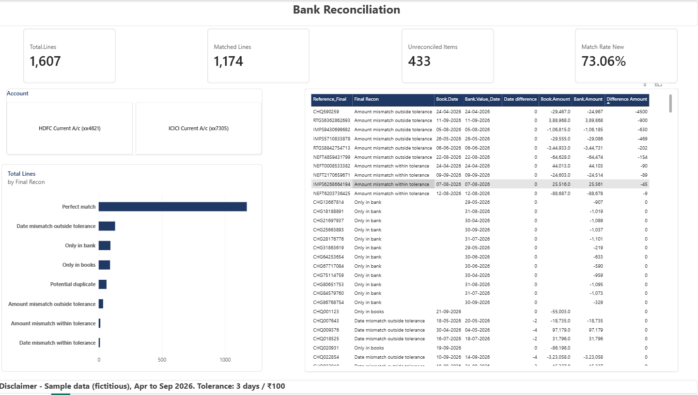

1. About this project
I am building my Power BI skills and chose bank reconciliation as a project because it is a core accounting activity. A reconciliation compares the company's cash book with the bank statement and explains every difference between them.
The objective was to see how much of this matching Power BI could automate, and to present the differences in a simple dashboard that shows what needs attention.
I learned this using online tutorials, and I used AI tools for guidance where I needed help. I have worked through each step to make sure I understand it.
2. The data
The project uses two Excel sheets:
- Cash book: 1,500 lines of receipts and payments as recorded by the company.
- Bank statement: 1,500 lines of deposits and withdrawals as recorded by the bank.
The data covers two bank accounts from April to September 2026. It contains typical reconciliation issues: cheques that clear late, amounts that differ, items recorded on only one side, and entries that appear twice.
3. Approach
- Load the data. Both sheets were loaded into Power BI and opened in Power Query for cleaning.
- Clean the data. I set the date columns to the correct type, removed extra spaces from reference numbers, standardised them to capital letters, and created a single amount column (receipts less payments) in both tables.
- Identify duplicates. Lines with the same reference and amount appearing more than once in a table were flagged. My first method was slow, so I replaced it with Group By, which is faster.
- Join the two tables. The cash book and bank statement were matched on the reference number. I used a join that keeps lines from both sides, so items found on only one side are not lost.
- Assign a status to every line. Each line receives one of six statuses, described in the next section.
- Apply tolerance limits. Small differences, up to 3 days or ₹100, are classified as within tolerance. These limits are stored as parameters so they can be changed easily.
- Validate the results. I compared the count for each status against the expected answers to confirm the logic was correct.
- Build the dashboard. The report includes summary cards, a status chart, a table of items requiring action, and a bank account filter.
- Finalise and export. Formatting was applied, and the report was exported as a PDF.
4. Reconciliation statuses
| Status | Meaning |
|---|---|
| Perfect match | Reference, date and amount agree in both records |
| Date mismatch | Reference and amount agree, but the dates differ (for example, a cheque cleared late) |
| Amount mismatch | Reference agrees, but the amounts differ (for example, TDS deducted or a keying error) |
| Only in books | Recorded by the company but not yet in the bank (for example, an outstanding cheque) |
| Only in bank | Appears in the bank but not recorded by the company (for example, bank charges or interest) |
| Potential duplicate | The same reference and amount appears more than once and may have been entered twice |
5. Results

Of 1,607 lines, 1,174 matched perfectly (73.06%) and 433 require follow-up.
| Status | Lines |
|---|---|
| Perfect match | 1,174 |
| Date mismatch (within / outside 3 days) | 70 / 70 |
| Amount mismatch (within / outside ₹100) | 13 / 35 |
| Only in books | 90 |
| Only in bank | 93 |
| Potential duplicate (31 references, 2 lines each) | 62 |
The dashboard has three summary cards (total lines, matched percentage and items to review), a bar chart of the statuses, a table of items requiring action, and a bank account filter.
6. Challenges and learnings
- Performance. My first duplicate check worked but was slow because it re-scanned the entire table for every row. Group By achieves the same result much faster.
- Blank values. After the join, some cells were blank, which caused errors until I treated a blank count as zero.
- Boundary conditions. My tolerance rule missed differences of exactly 3 days because I had used "less than" instead of "less than or equal to". I found this when my counts did not match the expected numbers.
- Filter behaviour. Clicking a bar in the chart caused one card to show a negative value. This taught me that measures respond to filters, so I need to be careful about which column each measure uses.
- Data quality. Reference numbers with extra spaces or lowercase letters do not match until they are cleaned.
7. Planned improvements
- Add a reconciliation statement that moves from the bank balance to the books balance.
- Allow the tolerance limits to be adjusted directly on the report page.
- Test with messier data that resembles real bank statements.
- Build two further dashboards: budget vs actuals, and receivables and payables ageing.
8. Live report
The report below is interactive. You can use the account filter and click on the chart.
Note: The live report is hosted on a trial account and may stop loading after the trial ends. The PDF and Power BI file in this repository remain available.